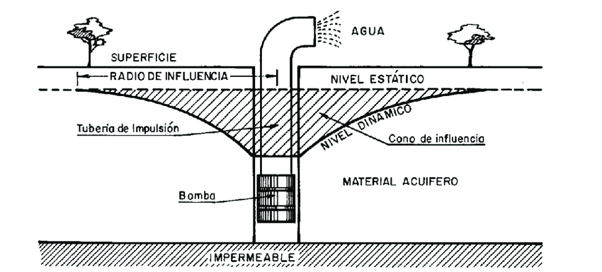

Depresión de napa
Fenómeno de descenso del nivel freático y sus implicaciones
Pozos para depresión de napa
Para deprimir la napa freática mediante perforaciones, se realizan pozos estratégicamente ubicados alrededor del área a desaguar. Estos pozos, equipados con bombas, extraen agua subterránea, reduciendo el nivel freático localmente. El diseño y la cantidad de pozos dependen de factores como la permeabilidad del suelo y el nivel deseado de depresión.
Proceso de depresión de napa freática mediante perforaciones
- Estudio geotécnico: Se analiza la permeabilidad del suelo y la profundidad de la napa para determinar la ubicación y cantidad de pozos necesarios.
- Diseño del sistema: Se define la ubicación de los pozos, el diámetro de las perforaciones, el tipo de bombas a utilizar (sumergibles o centrífugas) y la profundidad de instalación.
- Perforación de los pozos: Se realizan perforaciones con equipos especializados, como perforadoras rotativas o de percusión, dependiendo del terreno.
- Instalación de equipos: Se colocan tuberías de revestimiento (casing) en los pozos para evitar el colapso de las paredes y facilitar la instalación de bombas. Se instala la bomba en el pozo y se conecta a la red de desagüe.
- Pruebas y monitoreo: Se realizan pruebas de bombeo para determinar el caudal y la eficiencia del sistema. Se monitorea continuamente el nivel freático para asegurar la efectividad de la depresión.
- Mantenimiento: Se realizan mantenimientos periódicos a las bombas y sistemas de desagüe para asegurar su correcto funcionamiento.
Consideraciones importantes
- Permeabilidad del terreno: Un terreno con mayor permeabilidad requerirá más pozos y bombas más potentes para lograr la misma depresión.
- Profundidad de la napa: La profundidad de la napa freática influye en la profundidad de las perforaciones y la potencia de las bombas.
- Caudal de bombeo: El caudal de bombeo debe ser suficiente para evacuar el agua subterránea y mantener el nivel freático deseado.
- Impacto ambiental: Se debe evaluar el impacto ambiental de la depresión de la napa, especialmente en áreas cercanas a fuentes de agua potable.
- Permisos y regulaciones: Es importante obtener los permisos necesarios de las autoridades competentes antes de realizar cualquier tipo de perforación para deprimir la napa freática.
¿Qué es el radio de influencia de un pozo?

El radio de influencia es la distancia del centro del pozo hasta el punto donde el abatimiento tiende a cero.
¿Cómo se calcula el radio de influencia de un pozo?
Se obtiene como cociente entre la transmisividad T y el espesor del acuífero b. K = T/b y sus dimensiones serán L/T, es decir, m/día. La K es una medida de las características texturales del acuífero pero no representa por sí misma la capacidad de ceder agua.